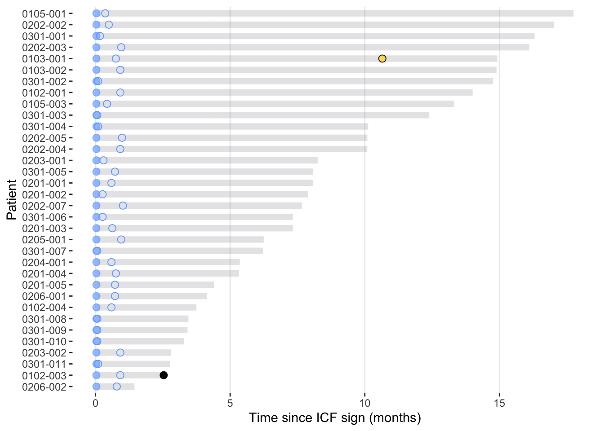

PECATI | Preliminary data monitoring, cleaning, and analysis. October 2023
Daniel Alcala
2023-10-25
Last updated: 2023-10-25
Checks: 7 0
Knit directory: PECATI/
This reproducible R Markdown analysis was created with workflowr (version 1.7.0). The Checks tab describes the reproducibility checks that were applied when the results were created. The Past versions tab lists the development history.
Great! Since the R Markdown file has been committed to the Git repository, you know the exact version of the code that produced these results.
Great job! The global environment was empty. Objects defined in the global environment can affect the analysis in your R Markdown file in unknown ways. For reproduciblity it’s best to always run the code in an empty environment.
The command set.seed(20231024) was run prior to running
the code in the R Markdown file. Setting a seed ensures that any results
that rely on randomness, e.g. subsampling or permutations, are
reproducible.
Great job! Recording the operating system, R version, and package versions is critical for reproducibility.
Nice! There were no cached chunks for this analysis, so you can be confident that you successfully produced the results during this run.
Great job! Using relative paths to the files within your workflowr project makes it easier to run your code on other machines.
Great! You are using Git for version control. Tracking code development and connecting the code version to the results is critical for reproducibility.
The results in this page were generated with repository version 513fa51. See the Past versions tab to see a history of the changes made to the R Markdown and HTML files.
Note that you need to be careful to ensure that all relevant files for
the analysis have been committed to Git prior to generating the results
(you can use wflow_publish or
wflow_git_commit). workflowr only checks the R Markdown
file, but you know if there are other scripts or data files that it
depends on. Below is the status of the Git repository when the results
were generated:
Ignored files:
Ignored: .DS_Store
Ignored: .Rproj.user/
Ignored: data/PECATI_Adverse Events_2023_10_24.xlsx
Ignored: data/PECATI_Concomitant Medication_2023_10_24.xlsx
Ignored: data/PECATI_Cycles_2023_10_24.xlsx
Ignored: data/PECATI_End of Study_2023_10_24.xlsx
Ignored: data/PECATI_FU 12 Weeks_2023_10_24.xlsx
Ignored: data/PECATI_FU30-EOT_2023_10_24.xlsx
Ignored: data/PECATI_ICF Screening_2023_10_24.xlsx
Ignored: data/PECATI_Laboratory_tests_2023_10_24.xlsx
Ignored: data/PECATI_PD-L1 Determination_2023_10_24.xlsx
Ignored: data/PECATI_Tumor Assessment_2023_10_24.xlsx
Untracked files:
Untracked: output/PECATI_swimmer_2023-10-24.png
Untracked: output/swimmer-spider-plot/
Note that any generated files, e.g. HTML, png, CSS, etc., are not included in this status report because it is ok for generated content to have uncommitted changes.
These are the previous versions of the repository in which changes were
made to the R Markdown
(analysis/WP1_Preliminary-analysis_2023-10-24.Rmd) and HTML
(docs/WP1_Preliminary-analysis_2023-10-24.html) files. If
you’ve configured a remote Git repository (see
?wflow_git_remote), click on the hyperlinks in the table
below to view the files as they were in that past version.
| File | Version | Author | Date | Message |
|---|---|---|---|---|
| Rmd | 513fa51 | Daniel Alcalá | 2023-10-25 | Add dummy swimmer-and-spider plots forr all sites |
| html | 4b43903 | Daniel Alcalá | 2023-10-25 | Build site. |
| Rmd | 6bb9d94 | Daniel Alcalá | 2023-10-25 | Fix swimmer-and-spider plot relative ratio |
| html | 48723bc | Daniel Alcalá | 2023-10-25 | Build site. |
| Rmd | c86fbc8 | Daniel Alcalá | 2023-10-25 | Add swimmer and spider plot |
| html | 1addb57 | Daniel Alcalá | 2023-10-25 | Build site. |
| Rmd | ee14ce1 | Daniel Alcalá | 2023-10-25 | Add post-baseline TA data and QA |
| html | fd1f173 | Daniel Alcalá | 2023-10-25 | Build site. |
| Rmd | 60a37c8 | Daniel Alcalá | 2023-10-25 | Fix error with baseline TA data reading |
| html | 8dc2a52 | Daniel Alcalá | 2023-10-25 | Build site. |
| Rmd | 2121121 | Daniel Alcalá | 2023-10-25 | Finish up processing baseline TA data |
| html | 3afea27 | Daniel Alcalá | 2023-10-25 | Build site. |
| Rmd | ffbf326 | Daniel Alcalá | 2023-10-25 | Add baseline measurbale disease evaluation to WP1 |
| html | ccbd5b3 | Daniel Alcalá | 2023-10-24 | Build site. |
| Rmd | e11ba39 | Daniel Alcalá | 2023-10-24 | Add swimmer plot with time since ICF |
| html | 29d6a43 | Daniel Alcalá | 2023-10-24 | Build site. |
| Rmd | f734987 | Daniel Alcalá | 2023-10-24 | Add EoS to WP1 |
| html | 06235cf | Daniel Alcalá | 2023-10-24 | Build site. |
| Rmd | 8130ec4 | Daniel Alcalá | 2023-10-24 | Cleaned tables column formatting |
| html | f09c47c | Daniel Alcalá | 2023-10-24 | Build site. |
| Rmd | b649eaa | Daniel Alcalá | 2023-10-24 | Abstract dates from read/write filenames to improve reusability |
| html | b7df43b | Daniel Alcalá | 2023-10-24 | Build site. |
| Rmd | 9e53a8c | Daniel Alcalá | 2023-10-24 | Update table styling |
| html | d222be4 | Daniel Alcalá | 2023-10-24 | Build site. |
| Rmd | 36a3f3f | Daniel Alcalá | 2023-10-24 | Update WP1 report Markdown styling |
| html | 6a83798 | Daniel Alcalá | 2023-10-24 | Build site. |
| html | ab137a2 | Daniel Alcalá | 2023-10-24 | Build site. |
| Rmd | 37a33ab | Daniel Alcalá | 2023-10-24 | Add EoT to WP1 |
| html | dda03e3 | Daniel Alcalá | 2023-10-24 | Build site. |
| Rmd | 354272f | Daniel Alcalá | 2023-10-24 | Patient disposition data |
The data cutoff date for this analyses is: 2023-10-24
Patient Disposition
Screening
Listing of patients who have undergone the screening phase (n = 45):
Table 1. Patients included, excluded, and reasons for exclusion
| N = 451 | |
|---|---|
| Included | 35 (83%) |
| Excluded | |
| Non-fulfillment Selection Criteria | 7 (100%) |
| 1 n (%) | |
Intention-to-treat population (ITT)
Listing of patients who have started study treatment (n = 34):
Study treatment discontinuation (EoT)
Listing of patients who discontinued prematurely the study treatment (n = 6):
Table 2. Patients who discontinued prematurely the study treatment:
| N = 61 | |
|---|---|
| Reason for study treatment discontinuation | |
| Unacceptable toxicity/adverse event | 2 (33%) |
| Clinical progression | 1 (17%) |
| General or specific changes in the patient’s condition render the patient unacceptable for further treatment in the judgment of the Investigator | 1 (17%) |
| Radiological progression | 1 (17%) |
| Second primary esophageal cancer | 1 (17%) |
| 1 n (%) | |
Study discontinuation (EoS)
Listing of patients who discontinued the study (n = 2):
Swimmer plot
Figure 1. Patient trajectories along the clinical trial from informed consent to study termination

| Version | Author | Date |
|---|---|---|
| 3afea27 | Daniel Alcalá | 2023-10-25 |
Tumour Assessment
This section presents the cleaning of tumour assessment data from the PECATI study. The ultimate goal is to obtain the number of patients who have experienced radiological disease progression. However, the main purpose of this preliminary analysis of radiological progressions is to detect anomalies or discrepancies in the tumour assessment data collected.
Data from tumour assessments need to be pulled from two different sources. On the one hand, we have the baseline tumour assessment included in the Screening sheet. On the other hand, we have the tumour assessment sheet itself, which collects all post-baseline assessments.
In addition, some patients might not have measurable lesions at baseline. Therefore, we need to collect data for both types of lesions.
Baseline tumor assessment
Measurable disease
First, we extract data from patients with measurable lesions at baseline:
Listing of patients with measurable disease at baseline phase (n = 34):
Non-measurable disease
Then, we extract data from non-measurable lesions at baseline for all patients:
Listing of patients with measurable disease at baseline phase (n = 25):
Quality assurance of baseline tumor burden
A histogram with the sum of the longest diameters of each patient at baseline is presented below with the intention of detecting possible strange or unlikely patterns:

| Version | Author | Date |
|---|---|---|
| 1addb57 | Daniel Alcalá | 2023-10-25 |
Post-baseline tumor assessment
Quality assurance of post-baseline tumor burden
Similarly, a histogram with the sum of the longest diameters of each patient after baseline is presented below with the intention of detecting possible strange or unlikely patterns:

| Version | Author | Date |
|---|---|---|
| 1addb57 | Daniel Alcalá | 2023-10-25 |


Preliminary Efficacy Analysis
Preliminary Safety Analysis
sessionInfo()R version 4.2.2 (2022-10-31)
Platform: aarch64-apple-darwin20 (64-bit)
Running under: macOS 14.0
Matrix products: default
BLAS: /Library/Frameworks/R.framework/Versions/4.2-arm64/Resources/lib/libRblas.0.dylib
LAPACK: /Library/Frameworks/R.framework/Versions/4.2-arm64/Resources/lib/libRlapack.dylib
locale:
[1] en_US.UTF-8/en_US.UTF-8/en_US.UTF-8/C/en_US.UTF-8/en_US.UTF-8
attached base packages:
[1] grid stats graphics grDevices utils datasets methods
[8] base
other attached packages:
[1] crayon_1.5.2 epoxy_1.0.0 survminer_0.4.9
[4] ggpubr_0.6.0 survival_3.4-0 gtsummary_1.7.2.9000
[7] gt_0.9.0.9000 cowplot_1.1.1 here_1.0.1
[10] janitor_2.2.0 writexl_1.4.2 readxl_1.4.3
[13] lubridate_1.9.2 forcats_1.0.0 stringr_1.5.0
[16] dplyr_1.1.2 purrr_1.0.1 readr_2.1.4
[19] tidyr_1.3.0 tibble_3.2.1 ggplot2_3.4.2
[22] tidyverse_2.0.0 workflowr_1.7.0
loaded via a namespace (and not attached):
[1] fs_1.6.3 httr_1.4.6 rprojroot_2.0.3
[4] tools_4.2.2 backports_1.4.1 bslib_0.5.0
[7] utf8_1.2.3 R6_2.5.1 colorspace_2.1-0
[10] withr_2.5.0 tidyselect_1.2.0 gridExtra_2.3
[13] processx_3.8.2 compiler_4.2.2 git2r_0.32.0
[16] textshaping_0.3.6 cli_3.6.1 xml2_1.3.5
[19] labeling_0.4.2 sass_0.4.7 scales_1.2.1
[22] survMisc_0.5.6 callr_3.7.3 systemfonts_1.0.4
[25] commonmark_1.9.0 digest_0.6.33 rmarkdown_2.23
[28] pkgconfig_2.0.3 htmltools_0.5.5 highr_0.10
[31] fastmap_1.1.1 rlang_1.1.1 rstudioapi_0.15.0
[34] farver_2.1.1 jquerylib_0.1.4 generics_0.1.3
[37] zoo_1.8-12 jsonlite_1.8.7 car_3.1-2
[40] magrittr_2.0.3 Matrix_1.5-1 Rcpp_1.0.11
[43] munsell_0.5.0 fansi_1.0.4 abind_1.4-5
[46] lifecycle_1.0.3 stringi_1.7.12 whisker_0.4.1
[49] yaml_2.3.7 snakecase_0.11.0 carData_3.0-5
[52] promises_1.2.0.1 lattice_0.20-45 splines_4.2.2
[55] hms_1.1.3 knitr_1.43 ps_1.7.5
[58] pillar_1.9.0 markdown_1.7 ggsignif_0.6.4
[61] glue_1.6.2 evaluate_0.21 getPass_0.2-2
[64] data.table_1.14.8 broom.helpers_1.13.0 vctrs_0.6.3
[67] tzdb_0.4.0 httpuv_1.6.11 cellranger_1.1.0
[70] gtable_0.3.3 km.ci_0.5-6 cachem_1.0.8
[73] xfun_0.39 xtable_1.8-4 broom_1.0.5
[76] rstatix_0.7.2 later_1.3.1 ragg_1.2.5
[79] KMsurv_0.1-5 timechange_0.2.0